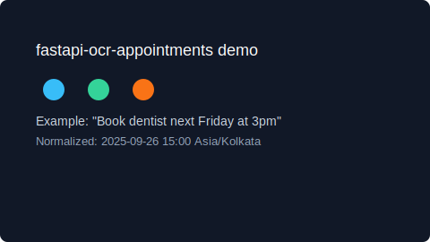

fastapi-ocr-appointments — Demo placeholder
This page is a small GitHub Pages skeleton. Replace the demo below with your recorded GIF.
Demo (placeholder)

How to replace
- Create your short demo recording (e.g., using OBS or ffmpeg).
- Save it as
docs/demo.gif in this repo, commit and push.
- Enable GitHub Pages to serve the
docs/ folder in repository settings.